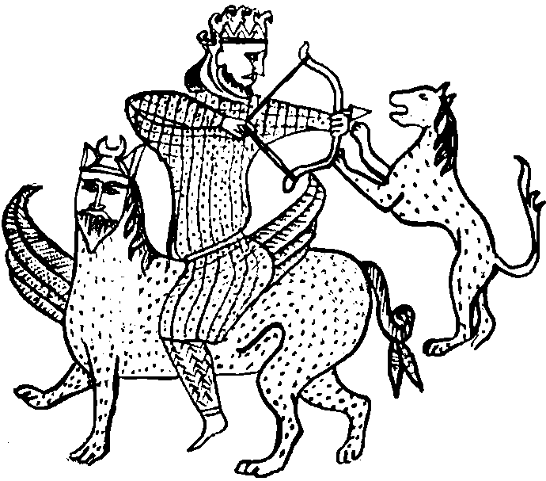

Aradan on iki dev yıl geçti. Huh... hah... oooniki dev yıl... huh... hah... oooniki kabile... huh... hah... İkisi burada huh... hah... Kalanı nerede? Huh... hah... Olaylarla, gelişmelerle dolu bir on iki yıl! Argun Afaki biraz daha yaşlandı ama enerjisinden hiçbir şey yitirmedi. Bunu Perran’dan ayrılıp kendinden otuz iki yaş küçük Tuğba Zemahşeri Hanım ile evlenerek cümle âleme de ispatladı. 523 gram ağırlığında minyatür, yine Argun adında bir oğlu oldu.
Tavramina Afaki, 1998 Ocağının soğuk bir günü, 23 Ocak Cuma akşamı, yıldızı gün geçtikçe parlayan Tankut Argun ile evlendi. Kız, Tavramina Afaki-Argun adını alarak babacığının edinmek için yanıp tutuştuğu soylu Argun adını ait olduğu yere, aileye geri getirdi. Soyadları özbeöz, pardon has be has Argun olan, tam üç adet kısık mavi gözlü, siyah parlak saçlı erkek evlat doğurdu. Çocuk başına ortalama on beş kilogram hesabıyla elli kilodan doksan beşe çıktı.
Ondan yalnızca bir yıl küçük kardeşi Beyzanur ise tam anlamıyla cılk çıktı. Babasına duyduğu tepkiden dolayı, önce evlenmeyip Laila senin Reina benim, vur patlasın çal oynasın bir hayat yaşadı. Sonra kendini güzel ülkemizde baskı gören bir kripto Yahudi olarak tanıtıp Hasidik bir yerleşmeci ile evlendi. Gazze Şeridi’nde, Han Yunus yakınlarında illegal bir kibbutza yerleşerek devekuşu ve timsah yetiştirme işinde uzmanlaştı.
Tankut Argun bu yıllarda kendi namına bir araştırmacı yazar olarak akranları arasından sivrildi. Başarıdan başarıya imza attı. Büyük ölçüde Argun Bey’den ilhamını alan araştırmalarını arka arkaya patlattı. Dönemin sonlarına doğru yazdığı Adoni: Kayıp Sabetaycı Tarikat’ın Sırrı adlı görkemli araştırması kendine pek hak edilmiş bir ün getirdi.
Bilgiye susamış Türkiye insanları hem bizleri kimlerin çekip çevirdiğini öğrendiler hem de resmi tarih ve resmi coğrafyanın öğrettiklerinin çöpe atılması gerektiğini. Mesela, resmi tarih, matbaanın Basmacı El-hac İbrahim Müteferrika tarafından 1727’de, Nevşehirli Damat İbrahim Paşa zamanında memleketimize getirildiğini mi söylemiş? Tankut, bunun böyle olmadığını, matbaanın Mason İbrahim Müteferrika tarafından yine mason, hem de ilk mason Yirmisekiz Çelebizade Mehmed Said Paşa’nın sadrazamlığında (1755–1756), Galata mason locasının kararıyla Osmanlı’ya getirildiğini söylüyordu. Mesela, resmi coğrafya Artvin’in deniz kıyısında olmadığını mı söylemiş, Tankut, meşhuuur Dekabristlerden Rus İbrahim Paşa’nın Petersburg limanından ayrılarak kruvazörüyle birlikte Artvin’de Osmanlı’ya nasıl sığındığını anlatırken kibarca, coğrafyacıların kalbini kırmaksızın, dolaylı da olsa Artvin’in deniz kıyısında olduğunu söylemiş oluyordu.
Resmi tezlerden gına getirmiş olan insanlar, kendi içinde tutarlı, adeta başlı başına bir mini Encyclopaedia Unomastica cildi olan bu kitabı hatim ettiler. Bu sonsuz bilgi ırmağından kana kana içtiler, susuzluklarını giderdiler. Tabii yapılacak şey “resmi tarihçi ve resmi coğrafyacıların” oturup kendilerine çekidüzen vermesiydi ki, bu taifenin Tankutun kitabının 112. baskısına kadar ses çıkarmaması, sonunda onların da gerçekleri gördüğünü kanıtlıyor gibiydi. Sükût, ikrardan gelmez mi? Neyse, devam edelim, huh... hah... ooniki baskı.... yüz ooniki baskı... huh... hah...
Zavallı Çiçek, soyadının herhangi bir biçimde Sabetaycılık ile açıklanamamasının son derece şüphe çekici olduğunu iddia eden Argun Bey tarafından işten atıldı. 1998 yılının soğuk bir Ocak günü, 23 Ocak Cuma sabahı, neredeyse yirmi yılını verdiği Unomastik Holding’ten, kanadı kırık bir kuş gibi, hâlâ Tebriz işi olduğunu zannettiği bakır “vazosu” koltuğunun altında, zavallı kırık çiçeği vazosunun içinde, kızarmış burnunu çeke çeke ayrıldı.
Tüm bu ayrılmalara, kopuşlara rağmen Unomastik Holding’in işleri asla aksamadı. Argun Bey’in “Yapamayan gider, yerine yapacak gelir” ve “Kimse vazgeçilmez değildir” vecizeleri holdingin her ofisinde en görünür yerlere asılıydı. Holding bu çalışma ilkesinin ne kadar doğru olduğunu gösterir şekilde büyüdü, serpildi. Hem eski işlerin hacmi arttı hem de üç yeni şirket daha holdinge katıldı.
Unomastik Gum’ın işlerinde 1999 yılı tam bir dönüm noktası oldu. Depremden sonra Yunanistan ile yaşanan yakınlaşma, Artemiz’in kulakları çınlasın, Sakız Adası’nda Osmanlı’dan sonra battal battal yatan tüm Pistacia lentiscus ormanlarının Unomastik Gum tarafından işletilmesine yaradı. Encyclopaedia Unomastica, aşağıda ayrıntılı olarak görülebileceği gibi çok başarılı oldu.
Unomastik Secdata’nın işleri uzunca bir süre yerinde saydıysa da 2000 yılından sonra birden patladı. Devleti, yerel yönetimi, sivil toplum örgütü, üniversitesi, anaokulu, şirketi, sanayicisi, tüccarı herkes Secdata’nın “kim Sabetayist kim değil” hususundaki engin bilgisine başvuruyor, bu kritik bilgiyi edinmek için avuç dolusu paralar ödüyordu.
Yeni kurulan şirketlerden biri olan Unomastik Media hiçbir zaman yazılı basın işine girmedi. Kâğıtla, mürekkeple uğraşmadan yalnızca görsel alanda faaliyet gösterdi, beş yıl içinde bir dev oldu.
Unomastik Tours ise basit bir turizm şirketi olmakla yetinmedi; pilot, hostes, rehber, garson, fesli şerbetçi, şalvarlı mantıcı, şakacı dondurmacı, kılıçlı yeniçeri ve bilumum animatör gereksinimlerini, sırf bu amaçla aynı gün kurulan ikizi, Unomastik Universitas eğitim şirketinden karşılayarak, her anlamıyla modern turizmi memleketimizde rayına oturttu.
90’lı yılların özellikle ikinci yansından itibaren, internetin yaşantımıza girmesi, bilgisayar satışlarını patlattı. Anadolu’nun ve Trakya’nın en ücra köşelerinde “interinet gayfeler” açılmaya başladı. Evlerine bilgisayar ve internet ikilisini sokma konusunda geri kafalı babalarını ikna edemeyen gençlik buralara abone oldu. Tabii kötü niyetli kişiler halkımızda aniden baş gösteren bu bilgi teknolojisi merakını porno sitelere bağlanma arzusuyla açıkladılar ama Türkiye ürkek değil cesur adımlarla, bilişim devriminin büyülü dünyasına daldı. Bu topraklarda böyle bir şey bir kez de neolitik devrim sırasında yaşanmış, bu halk o zaman Ortadoğu’dan gelen yeni düşünceyi hızla benimsemiş, ekmiş, biçmiş, hayvan beslemiş, ama bilişime gelinceye kadar aradaki tüm devrimleri ıskalamıştı. Maalesef, sosyal bilimcilerimiz de bu yakın takip hadisesini ıskaladılar.
Ortalama her altı ayda bir, kan içici, kelle düşkünü soyadı tanrısına bir üyelerini kurban edip yenisini edinen Encyclopaedia Unomastica'cılar özellikle bilgisayar ve internet ile donandıktan sonra ateş gibi çalıştılar, çiçek gibi iş çıkardılar. Tam on iki, huh... hah, ciltlik özlü bir ansiklopedinin 120,000 sayfa tutan ham verilerini hazırladılar.
Yeni yöntem ve üretim araçlarını asla ıskalamayan Argun Bey bu verileri titizlikle işledi, en çarpıcı olan onda birlik kısmını seçti. Yedd-i Vahit Yahut Yad Ehad Ansiklopedisi adı altında, her yıl için bir adet “teori” cildini, bir adet “seçilmiş belgeler” cildi ile birlikte bastırarak, on iki, aslında yirmi dört ciltlik, muazzam bir külliyat tarzında yayınladı. Bu “belge ciltleri”nde onomastique yöntemini nasıl kullandığı kamuoyu tarafından görülsün diye, günlük gazetelerden kestirdiği ve başlıca kaynağı olan ölüm ilanlarını virgülüne bile dokunmadan, enine, boyuna, bazen de ters basarak herkesle paylaştı.
Sonra, bu anıtsal eserin tam takım hediye olarak okuyuculara ulaşması için büyük günlük gazetelerden biriyle anlaştı. 2003 yılının son üç buçuk ayında Unomastik Media ile eşgüdümlü olarak yürütülen 99 kuponluk, hızlı ve büyük bir kampanya ile bu rüya gerçek oldu. Encyclopaedia Unomastica memleketimizin tam 703.111 hanesine ulaşmıştı artık.
Media’cılar bazen çat kapı gecekondulara bile giriyorlar, yaratıcılığının hududu olmayan halkımızın Encyclopaedia Unomastica’yı nasıl değerlendirdiklerini gözler önüne seriyorlardı. Çoğu evde, huzurunda fısıltıyla konuşulan, görene hürmet telkin eden bir büyükanne edasıyla baş köşelere kurulmuştu ansiklopedi.
Bazılarında kıymetli bir mobilya muamelesi gördüğü, üstüne örtülen dantel örtülerden anlaşılıyordu. Bazı yoksul ve cahil evlerde ise kalın Unomastica ciltlerinin tabure olarak kullanıldığı görülüyordu. Argun Bey bu projede hiçbir mali kaygı gözetmemişti. Yeter ki memleket evladı kimin kim olduğunu öğrensin, bizi yöneten, çekip çeviren, içimizdeki dönmelerin farkında olsun!
İşin güzelliği, kendisine neredeyse bedava önerilen ansiklopedinin üzerine besmelesiz atlayan gazetenin, Argun Bey’in televizyonlarında günde üç kez Sabetaycı olarak nitelenen bir gruba ait olmasındaydı. “Böyle yaparım ben adamı. Böyle afişe ederim. Çıkarları söz konusu olunca nasıl atladılar teklifin üzerine. Ne kavimmiş ama!” diyordu Argun Bey.
Bu kuponla dağıtım olayından sonra, “eserim asıl şimdi yayınlandı, yayıldı” düşüncesiyle Argun Bey, eski emektarları da dahil olmak üzere Unomastica’cılara, 31 Aralık 2003 günü, Levent’teki Unomastik Holding merkez binasının en üst katında müthiş bir parti verdi. Onlar da hazımsızlık etmediler, Cemile’si, Mübcrra’sı, Çiçek’i, Ayşen’i, Sevil’i, hepsi, kocalarını da kollarına taktılar, kalkıp geldiler.
Çiçek Hanım gümüş bir zincirle kolundaki enli gümüş bileziğe lehimlenmiş, içinde kurumuş, kırık bir çiçek gövdesi bulunan Tebriz işi bakırdan sürahisi/vazosu ile birlikte geldi. Bütün bir kat, tarifi imkânsız bir kokuyla doldu. Eski yeni bütün Unomastica’cılar anında birbirlerine dedikodu fişleri yazdılar. Müberra’nın yazdığı bilgi fişi herkesinkinden değerliydi. Herkesi ikna etti. Çiçek, “ellere” düğün dernek olan, kovulduğu o meşum günden sonra vazosunu yanından hiç ayırmamış, Tankut’a duyduğu ölümsüz aşkı gömdüğü seyyar bir anıtmezar gibi, hep yanında taşımış, ne içindeki toprağı boşaltmış, ne de ölü şefleranın kummuş bedenini çıkarıp atmıştı. Kazara yanından ayrılır diye vazoyu da kendi bedenine raptettirmişti.
“Ya koku? Ya koku” diye yazılan soru fişlerine karşılık Müberra yeni bir bilgi fişi yazdı. Çiçek o günden sonra bir daha asla yıkanmamış, ne ölü şefleraya ne de kendi bedenine bir damla su değdirmişti. Çiçek, varlığını ölü çiçeğinin varlığına bağlamış, kendi bedeni de bir an önce çiçeğe benzesin istiyor, ağzına ancak ölmeyecek kadar yemek koyuyormuş. Sonuç ise gerçekten şaşırtıcıydı: Çiçek, sanki bir yerlerden gençlik iksiri bulup içmiş gibiydi. Saçları yine gece karası, beli incecik, kolsuz siyah, uzun elbisesi, çevik, yay gibi vücudunun tüm güzelliğini, tüm hatlarını gözler önüne seriyor, eski kavisli burnuna Tankut’la olamayan düğünün hemen arifesinde şefkatli bir cerrah eli değdiği için, yüzünde klasik bir Helen tanrıçası ifadesi – yalnız, küçük göğüslerinde belli belirsiz bir irileşme mi var ne?
Baş ağrısı ve nezlesine rağmen Tavramina’nın tatavasıyla partiye gelen Tankut o gece hayatının sayılı pişmanlıklarından birini yaşıyordu. Gözlerini önce özgürce fakat kayıtsızca, Tavramina’nın iri, kat kat göbeğini hemen tamamıyla dışarıda bırakan, iri, sarkmış göğüslerini ise ancak kapatan gömleğine dikiyor, sonra kaçamak nazarlarla salonun tam ortasında duran Çiçek’in yıllarla hiç değişmeyen, değişmek ne kelime, iyice zarifleşen, güzelleşen endamına bakıyordu. Bu kadar güzel bir yaratığın etrafının Gobi çölü gibi boş olmasına şaşırıyor, bir anlam veremiyordu. Pürüzsüz kollarında bir bebek gibi tuttuğu bakır vazosunun yarattığı tuhaf dérangé görünüm mü acaba bunun nedeni? Daha neler? Erkek kısmı, isterse elinde varil taşısın bu güzelliği yalnız bırakmazdı. Bırakamazdı.
Gözleri Holdingin delikanlılarını aradı. Her biri salonun ücra köşelerinde birtakım kaknem kadınların korumasına iltica etmiş, meydanı sanki bilerek boş bırakmışlardı. Kaderine söylenerek, gecenin şerefine özel olarak hazırlanan sakızlı rakıdan üst üste altı bardak hakladı. Başı dönüyor, dili peltekleşiyor, Çiçek’in yanına gitmek için dayanılmaz bir arzu duyuyordu.
Yetmiyormuş gibi, gençliklerinin pek moda bir parçası olan “ooo mastika mastika...” çalmaya başladı. Tankut artık kendini dizginleyemedi, Tavramina’nın kocası, Argun Bey’in yeğeni ve damadı, üç adet Argun yavrusunun babası, holdingin de iki numarası olduğunu unutarak, rakı bardağını karısının eline tutuşturdu, oynaya döktüre salonun ortasına yürüdü. “Ooo mastika mastika... alayım kızıma bir kutu boya...”
“Kızı” da Allah için cevap verdi. İnanılmaz bir kıvraklık ve eda ile öyle bir oynadı, elindeki vazoya rağmen öyle oynak figürler yaptı ki, Salome görse yedi peçesinden hiçbirini açmaksızın doğrudan bir tapınağa kapatırdı kendini. Kalan iki dirhem aklı da Tankut’un başından gitti.
Dudaklarında tek bir kelime, “Çiçek... ah Çiçek...” diyor, başka bir şey demiyordu. Etraftaki hissizlerin iyice kenara köşeye kaçmasından dolayı açılarak pist haline gelmiş yerde, geçen tüm yılların acısını çıkarırcasına oynadılar. Bazı ruhsuz kıskançların ağızlarını tuta tuta tuvalete koşturmaları, bu İkiliyi hiç ama hiç ilgilendirmiyordu. Çiçek’in siyah göz bebeklerinde gizemli, davetkâr pırıltılar vardı. Tavramina’nın yüzü asıldı. Gök yeşil gözleri yaşlarla doldu taştı. Elleriyle yüzünü kapatarak dışarı fırladı.
İki saat kadar sonra Argun Afaki Bey, arada sırada başını yana çevirerek, salonun ortasına kıvrılıp yatmış, fakat yaptığı bilek hareketleriyle parmak şakırdatmalarına bakılırsa hâlâ bir başka âlemde oynamayı sürdüren damadına kızgın bakışlar gönderiyordu. Parti nedense erkence bitmişti. “Tankut’umu almadan gitmem. Gördünüz o da beni istiyor. Hem de nasıl!” diye direnen ve ufak bir skandal yaratan Çiçek’i Bayram Ağa ile evine göndermişti.
Soğuk ve yağışlı havaya rağmen, yarısını parti ahalisinin açtığı pencerelerin kalanını da kendi açtırmış, aynı kattaki ofisinden getirdiği döner koltuğunu çok uzaklarda ve çok aşağılarda kalan Boğaz’ı gören pencerelerden birinin önüne koymuş, oturmuş, içeri dolan rüzgâra karşı söyleniyor, bu rezaletin etkilerini nasıl sileceğini, Tankut salağını nasıl cezalandıracağını düşünüyordu:
“Çöplük değil ahır romantizmi! Aşk değil katır cilveleşmesi! Gözleri yoksa burnunun delikleri de mi iptal oldu andavallının? Zavallı Tavramina, zavallı yavrum! Ne yapayım ben şimdi senin o mercimek beyinli kocana? Bizi aile boyu rezil etti. Keşke mis kokulu çiçeğine teslim etseydim. Sabah o kokarcanın koynunda uyanınca tüm intikamımız da alınmış olurdu...”
Hızlı yağdığı zaman yağmurun içinden ışıkları bir görünüp bir kaybolan Boğaz’ı ve köprülerden akan trafiği böyle daha ne kadar seyretti, bilemedi. Bir süre sonra beti benzi limon gibi olmuş bir Bayram Ağa omzuna dokununca irkilerek geri döndü. Çiçek yakınlarda, Sanayi Mahallesi’nde gecekondumsu bir yerde yaşıyormuş.
“Argun Bey! Evini bir görseydin! Yok böyle pislik. Yok böyle bir şey!”
“Tamam Bayram tamam... Hadi yardım et, hazır yağmur durmuşken şu bizim salağı asansöre, sonra da benim arabaya taşıyalım. Sen de git, yıkan, yarın geç gel, biraz istirahat et.”
İki yaşlı adam, Tankut’un hâlâ biraz Çiçek kokan ağır gövdesini güçlükle önce asansöre, sonra da güvenliğin şaşkın bakışları altında Argun Bey’in cipine taşıdılar. Oooniki, huh... hah... dev yılın son hadisesi bu oldu. Yağmur aniden durmuştu, isi tozu yıkanıp akan gök, kristal berraklığında, her tarafta havai fişekler patlıyor, İstanbul yeni bir yıla daha giriyordu. Saat tam gece yansıydı.